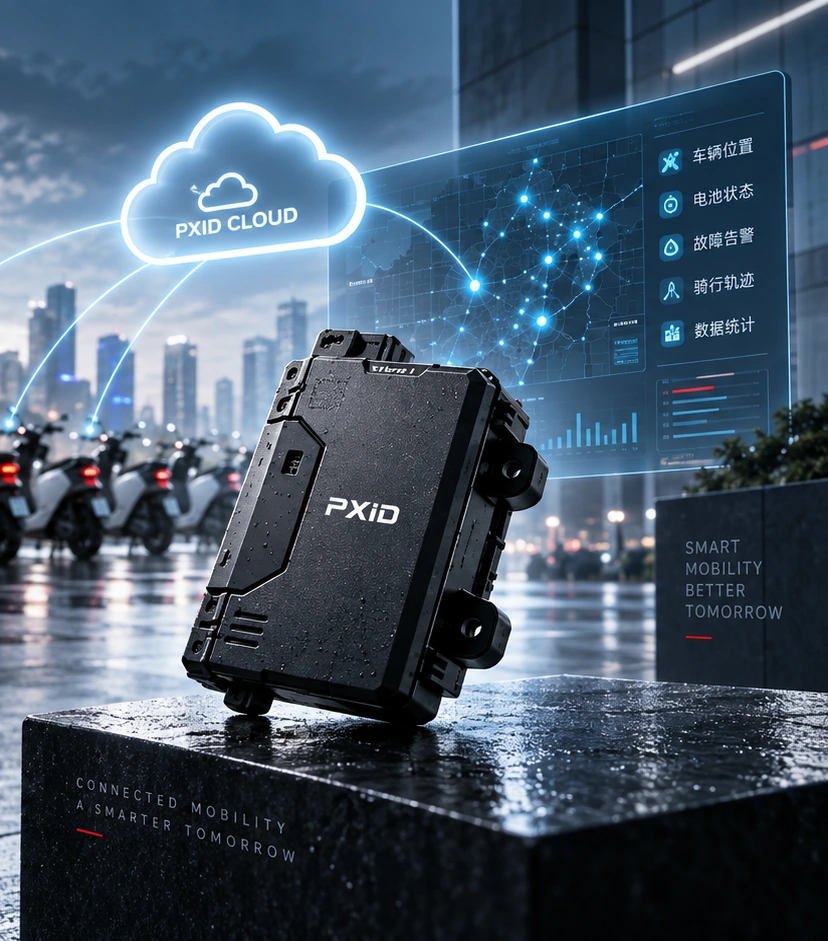
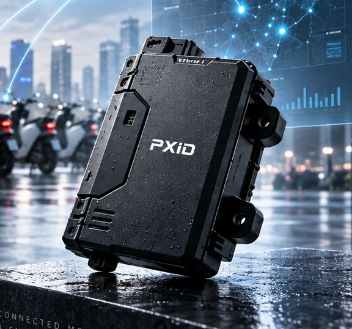
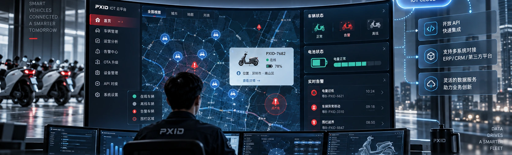
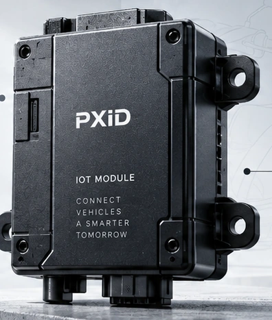
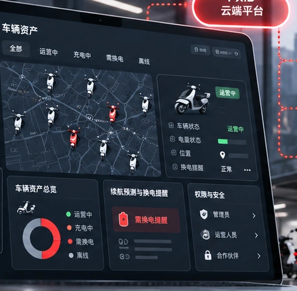
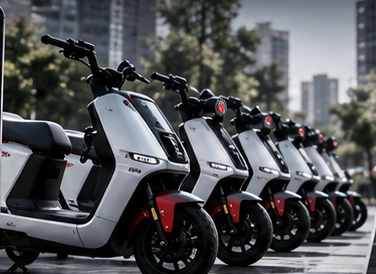
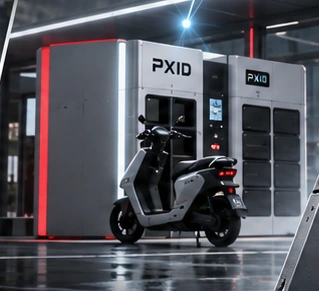
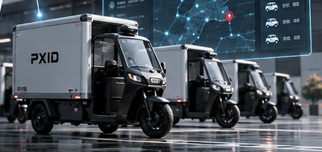

01
车辆定位
GPS / 北斗双模，轨迹可回溯。

Specifications02 / 07
以下为标准平台参数，ODM 项目可按车型重新定义。

PLATFORM SPECIFICATIONS平台参数 / 项目核对
| 通讯方式 | 4G Cat.1 / BLE 5.0 |
|---|---|
| 定位 | GPS / 北斗 双模 |
| 供电 | 整车 12–72V 直供，低功耗待机 |
| 工作温度 | -30℃ ~ +80℃ |
| 云端平台 | 数据看板 + 开放 API |
| 数据安全 | 加密通道，分级权限 |
| 远程能力 | OTA、诊断、参数下发 |
| 典型时延 | 状态上报 ≤ 1s |
| 防护等级 | IP67 |
| 部署 | 控制器 / 仪表无缝对接 |
适用型号、工作条件与报告以项目确认资料为准。

Cloud Platform03 / 07
CONCEPT VISUALIZATION
概念可视化 · 非真实后台与实时数据
GPS / 北斗双模，轨迹可回溯。
故障码云端读取，工单自动派发。
固件与策略远程下发。
电压 / 温度 / 循环次数全采集。
异动告警 + 电子围栏。
资产、续航、利用率一屏统览。
具体硬件、软件版本与支持范围，以项目资料核对。
Hardware04 / 07
IOT 模组作为 CAN 节点与控制器 / 仪表对接，无需改动车型主电路。
外形为概念示意；接口定义、供电与兼容范围须按选定型号确认。

Platform05 / 07
开放 API 对接客户的调度、换电与 CRM 系统，数据所有权归运营方。

配图中的地图、状态和数字仅用于视觉示意；未接入车辆、云端 API 或运营数据库。
Selection06 / 07
ONE PLATFORM
MORE POSSIBILITIES

01 / SCENARIO定点还车 · 异动告警 · 骑行计费联动

02 / SCENARIO电量预测 · 换电工单 · 资产盘点

03 / SCENARIO调度优化 · 健康度评分 · 远程锁车
应用画面为概念示意，不代表已有量产案例。选择应用场景，进入项目咨询以获取匹配方案。